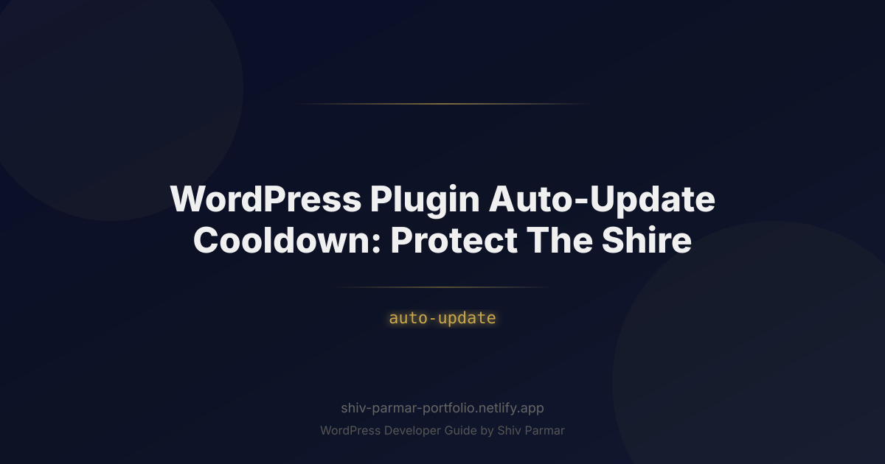

WordPress Plugin Auto-Update Cooldown: Protect The Shire
Table of Contents
Imagine waking up on a Tuesday morning to your Slack channels exploding with critical alerts: your checkout page throws a fatal 500 error, your lead generation forms are silently failing, and your organic search rankings are beginning a steep descent. You have not touched the codebase in forty-eight hours. What happened? In the dead of night, a minor point release of a third-party form plugin executed via background auto-update. A single unvetted line of code conflicted with your theme framework, instantly taking down your production environment.
In the WordPress ecosystem, your digital presence is your Shire—a flourishing, peaceful domain built through meticulous effort, content creation, and custom engineering. Yet outside your borders lies an unpredictable wild: hundreds of thousands of plugin repositories, rapid deployment pipelines, and third-party developers pushing updates at varying levels of code quality. Leaving the gates completely open to immediate, unmoderated updates invites chaos into your peaceful home.
While automated updates were designed to eliminate security vulnerabilities across the web, unthrottled zero-day deployments create a perilous tradeoff between reliability and defense. The solution is not to abandon automated patching entirely, but to implement a calculated plugin security buffer: the WordPress plugin auto-update cooldown. By instituting a deliberate quarantine window between the moment an author deploys to WordPress.org and the moment your production server pulls the files, you safeguard your architecture against broken releases, supply-chain attacks, and regression bugs.
What is a WordPress Plugin Auto-Update Cooldown?
A WordPress plugin auto-update cooldown—often referred to as an update delay window or staged rollout quarantine—is a defensive deployment strategy where automatic background updates for plugins are deferred for a predetermined duration (typically 48 to 168 hours) after their official release. Rather than pulling new code down the instant a developer tags a new release in SVN on WordPress.org, your site intentionally waits.
When WordPress 5.5 introduced native opt-in auto-updates for plugins and themes, it established a binary system: updates were either applied automatically via the built-in wp-cron scheduler twice daily, or they remained entirely manual. Under standard conditions, when an update is flagged on the central WordPress repository, WordPress's internal updater (wp_maybe_auto_update()) grabs the new zip file during the next cron loop, unpacks it, overwrites your active plugin directory, and runs any database upgrade routines without human intervention.
A cooldown architecture intercedes directly in this loop using WordPress's hook ecosystem—specifically the auto_update_plugin filter. It interrogates the plugin release metadata, calculates the age of the deployment, and returns false until the release has survived in the wild for your designated evaluation period. If an update introduces a fatal error, breaks backwards compatibility, or contains malicious code injected through a compromised committer account, the wider WordPress community absorbs the blast radius. By the time your cooldown expires, the offending update has typically been pulled, hotfixed, or flagged by security researchers, keeping your production environment completely insulated.
Why Plugin Auto-Update Cooldown Matters in 2026
The web ecosystem of 2026 is vastly more complex and interconnected than it was when WordPress first experimented with automated deployment routines. Modern enterprise and e-commerce websites rely on headless architectures, deeply coupled API microservices, complex object caches (Redis, Memcached), and advanced PHP 8.3+ typing standards. A minor syntax oversight or database schema mismatch that goes unnoticed in a developer's staging sandbox can cause catastrophic failures on a live, highly concurrent production stack.
Three converging factors make an auto-update cooldown an indispensable component of modern plugin security and operational resilience:
1. Software Supply Chain Attacks on WordPress.org
Over the past several years, malicious actors have shifted their focus from brute-forcing individual WordPress installations to compromising the upstream supply chain. Attackers target developer accounts on WordPress.org through credential stuffing, phishing, or social engineering. Once inside, they push seemingly legitimate point releases injected with obfuscated backdoors, SEO spam injectors, or credit card scrapers. When thousands of sites ingest these updates instantly via unmoderated background routines, the attack achieves massive scale within hours. A cooldown period provides vital time for security teams, automated scanners, and repository moderators to identify rogue commits, revoke hijacked credentials, and roll back malicious tags before your servers ever run the code.
2. The Velocity of CI/CD and the Decline of Manual QA
Modern continuous integration and deployment pipelines allow developers to publish updates to the official repository at dizzying speeds. While this agility is commendable for patching vulnerabilities quickly, it has significantly compressed the Quality Assurance (QA) window. Edge-case bugs, fatal conflicts with particular server configurations, and database deadlocks frequently make it into point releases (e.g., v3.4.1 hotfixing v3.4.0 within six hours). Websites that pull updates immediately act as unpaid automated testing grounds for plugin authors. Implementing a cooldown lets other webmasters act as canary testers.
3. Regulatory and Compliance Mandates
With regulations like the European Union's Digital Operational Resilience Act (DORA) and NIS2 strictly enforced across digital business footprints, unplanned downtime and unvetted software modifications introduce profound legal and financial liability. Enterprises are legally required to maintain rigorous change-management logs and disaster prevention controls. Firing automatic code changes directly into production with zero vetting or telemetry contravenes basic operational risk mandates. A cooldown protocol bridges the gap between staying patched and maintaining auditable change-control stability.
| Strategy | Mean Time to Patch (MTTP) | Risk of Downtime | Supply Chain Protection | Operational Overhead |
|---|---|---|---|---|
| Immediate Auto-Update | < 12 Hours | High (Regression & Conflicts) | None (Zero-Day Ingestion) | Very Low |
| Fully Manual Updates | Weeks to Months | Moderate (Accumulated Debt) | High (If Audited) | Extremely High |
| Auto-Update Cooldown (3-5 Days) | 72 - 120 Hours | Extremely Low | Strong (Community Scrubbing) | Low (Automated Pipeline) |
Step-by-Step Guide: Implementing an Auto-Update Cooldown System
Implementing an automated quarantine period requires intercepting WordPress's built-in update validation filters and checking the release date of the new version via the WordPress.org Plugins API. Below is a complete implementation guide for engineering an intelligent cooldown protocol directly into your theme functions, a custom Must-Use (MU) plugin, or an operational site management plugin.
Step 1: Auditing Plugin Criticality and Tiering
Before applying broad update policies, inventory your active plugins and classify them into risk tiers. Not all plugins should be subject to the exact same update cadence:
- Tier 1: Mission-Critical Infrastructure (Strict 5-7 Day Cooldown): E-commerce backbones (WooCommerce), custom routing, membership engines, database abstractions. A breakdown here completely halts revenue.
- Tier 2: Standard Enhancements (3-Day Cooldown): SEO plugins, form builders, performance optimizers, analytics integrations.
- Tier 3: Pure Security Defenses (0 to 24-Hour Cooldown): Firewalls, two-factor authentication, and malware scanners. These often patch active exploits and may require immediate exemption from extended cooldowns.
Step 2: Hooking into the auto_update_plugin Filter
WordPress provides a filter named auto_update_plugin which executes whenever the site considers automatically updating a plugin. The filter passes two parameters to its callback:
$update(bool|null): Whether to update. By default, this is determined by core configuration or user interface settings.$item(object): An object containing metadata about the plugin update (e.g.,id,slug,pluginfile path,new_version,package).
By returning false, you tell WordPress to abort the background update for that specific plugin on this cron cycle, while keeping the update visible in the WP Admin dashboard for manual review.
Step 3: Querying the WordPress.org Plugin Information API
To determine if a plugin is within its cooldown window, your system needs to know when the new version was uploaded to the repository. The WordPress Core API function plugins_api() can retrieve the detailed profile of any plugin hosted on WordPress.org, including its changelog and the last_updated timestamp.
Because querying an external API during a background cron loop can add latency, responses must be stored locally using the WordPress Transients API to prevent repeated HTTP requests.
Step 4: Building the Custom Cooldown Must-Use Plugin
Create a Must-Use plugin to ensure this logic cannot be accidentally deactivated from the dashboard. Navigate to your wp-content/mu-plugins/ directory (create it if it does not exist) and create a file named plugin-cooldown-sentinel.php.
<?php
/**
* Plugin Name: Production Cooldown Sentinel
* Description: Delays WordPress plugin automatic updates by a predefined cooldown window to protect site stability.
* Author: Shire Defense Architect
* Version: 1.0.0
*/
if (!defined('ABSPATH')) {
exit; // Exit if accessed directly.
}
// Define the cooldown window in seconds (e.g., 4 days = 345,600 seconds)
if (!defined('SHIRE_AUTO_UPDATE_COOLDOWN_SECONDS')) {
define('SHIRE_AUTO_UPDATE_COOLDOWN_SECONDS', 4 * DAY_IN_SECONDS);
}
add_filter('auto_update_plugin', 'shire_enforce_plugin_update_cooldown', 10, 2);
/**
* Evaluates whether an automated plugin update meets the cooldown criteria.
*
* @param bool|null $update Whether to update.
* @param object $item The update metadata object.
* @return bool True to proceed with the update, false to defer.
*/
function shire_enforce_plugin_update_cooldown($update, $item) {
// If auto-updates are already disabled for this item, respect that decision.
if ($update === false) {
return false;
}
// Ensure we have a valid slug to check against WordPress.org
if (empty($item->slug)) {
return false; // Safely abort auto-update for non-repo or unidentifiable plugins
}
$release_time = shire_get_plugin_release_timestamp($item->slug);
// If release time cannot be retrieved, postpone update to remain safe
if (!$release_time) {
return false;
}
$current_time = time();
$elapsed_time = $current_time - $release_time;
// Check if the plugin has cleared the mandatory cooldown period
if ($elapsed_time < SHIRE_AUTO_UPDATE_COOLDOWN_SECONDS) {
// Plugin is still in quarantine; do not auto-update yet
return false;
}
// Cooldown passed, allow WordPress core or site settings to proceed with the update
return true;
}
/**
* Fetches the release timestamp for a specific plugin from WordPress.org.
*
* @param string $slug Plugin directory slug.
* @return int|false Unix timestamp of release or false on failure.
*/
function shire_get_plugin_release_timestamp($slug) {
$transient_key = 'shire_rel_time_' . sanitize_key($slug);
$cached_timestamp = get_transient($transient_key);
if (false !== $cached_timestamp) {
return (int) $cached_timestamp;
}
// Include the core file necessary for plugins_api() if not already loaded
if (!function_exists('plugins_api')) {
require_once ABSPATH . 'wp-admin/includes/plugin-install.php';
}
$args = [
'slug' => $slug,
'fields' => [
'last_updated' => true,
'versions' => false,
],
];
$call_api = plugins_api('plugin_information', $args);
if (is_wp_error($call_api) || empty($call_api->last_updated)) {
return false;
}
$timestamp = strtotime($call_api->last_updated);
if ($timestamp) {
// Cache the release timestamp for 12 hours
set_transient($transient_key, $timestamp, 12 * HOUR_IN_SECONDS);
return $timestamp;
}
return false;
}
Step 5: Implementing CVE and Security Patch Overrides
A static cooldown introduces a genuine risk: delaying an update that patches an actively exploited critical Remote Code Execution (RCE) or SQL Injection vulnerability. To counter this, introduce a whitelist override. If a security release is tagged with a severe vulnerability rating, the system can bypass the quarantine.
/**
* Example enhancement: Bypass cooldown for security updates
*/
add_filter('auto_update_plugin', 'shire_security_override_check', 5, 2);
function shire_security_override_check($update, $item) {
// Check if the update package notice indicates a critical security fix
// Alternatively, integrate with security telemetry like Patchstack or WPScan API
if (!empty($item->upgrade_notice) && stripos($item->upgrade_notice, 'security') !== false) {
// Log this critical patch event
error_log(sprintf('Shire Defense: Security patch detected for %s. Bypassing cooldown.', $item->slug));
return true; // Force-enable auto-update for this security patch
}
return $update;
}
Step 6: Setting Up Notification & Staging Webhooks
When an update is deferred by your cooldown filter, your development and operations team should still know it exists. Rather than relying on silent postponement, integrate a notification mechanism via the set_site_transient_update_plugins hook. When a new plugin version is discovered, your system can spin up an automated continuous integration staging environment, apply the update in isolation, execute visual regression tests, and report back to your team.
Best Practices for Auto-Update Cooldown Configurations
A cooldown protocol is not a substitute for an overarching infrastructure strategy; it is an enforcement gate. To get the maximum security and stability benefits from this architecture, follow these industry-proven best practices:
1. Align Cooldown Duration with Traffic Patterns
Tailor your quarantine duration to the deployment rhythm of the open-source community. Most critical regression hotfixes (e.g., version 1.2.1 patching a fatal crash in 1.2.0) are published within 48 to 72 hours of the primary release. A cooldown of 72 to 96 hours (3 to 4 days) hits the sweet spot for the vast majority of web properties. For high-throughput enterprise sites with peak business on weekends, configure your update window to unfreeze updates exclusively between Tuesday morning and Thursday afternoon, completely avoiding "Read-Only Fridays."
2. Never Apply Uniform Policies Across Custom and Premium Plugins
The WordPress.org API handles metadata differently than third-party licensing systems (such as those using Freemius, EDD Software Licensing, or private Git servers). Premium plugins hosted on private update servers often do not provide a standard last_updated schema. For private or enterprise-tier commercial add-ons, either maintain an internal package mirror (like Composer via Satis or Private Packagist) or configure specific logic handlers that prevent them from falling through your public API fallback routines.
3. Combine Cooldowns with Automated Backups
An update that clears a 5-day cooldown can still introduce conflicts with your bespoke code. Never execute an auto-update without an atomic snapshot. Modern hosting environments can trigger an automated pre-update backup snapshot via API before the update proceeds. Ensure your system triggers a differential backup or database snapshot before any queued batch update runs.
4. Leverage Staging Environments with Canary Deployments
If you manage multiple web properties, set up a staged update ring:
- Development / Staging: 0-day cooldown (pulls updates instantly to test automatically).
- Internal / Lower-Risk Sites: 2-day cooldown (canary testing under light production loads).
- Flagship / Enterprise Sites: 5-day cooldown (maximum protection, updated only after lower tiers confirm stability).
| Tier Level | Environment | Recommended Cooldown | Automation Triggers |
|---|---|---|---|
| Canary | Staging / QA Sandboxes | 0 Days (Immediate) | Headless E2E Cypress/Playwright Tests |
| Low-Impact | Internal Blogs, Intranets | 2 Days (48 Hours) | Uptime and Basic Health Checks |
| High-Impact | E-commerce, Main Marketing Hubs | 4 - 7 Days | Full Synthetic Transaction Monitoring |
Common Mistakes to Avoid
Configuring automated updates without fully understanding the underlying mechanics can lead to broken update pipes or unintended security lapses. Watch out for these operational pitfalls:
1. Indefinite Deferral Due to Uncaught API Failures
If your cooldown script queries the WordPress.org API and fails to handle network timeouts or rate limits gracefully, it may default to returning false indefinitely. When this happens, a plugin will never update automatically. Always ensure that failure conditions log appropriate administrative warnings or fall back to a structured manual review queue after a set number of days.
2. Ignoring Transients and Overloading the Hosting Server
The WordPress cron runner executes regularly. If your cooldown logic queries the external plugins_api() on every single execution of auto_update_plugin without transient caching, your server will generate dozens of blocking outbound HTTP requests during every cron tick. This can exhaust PHP workers, trigger rate-limiting from the official repository, and dramatically slow down your administration interface. Always cache API responses for at least 12 hours.
3. Blindly Applying Cooldowns to Known Security Exploits
The most catastrophic mistake an engineer can make with an update cooldown is treating a zero-day vulnerability patch the same as a cosmetic feature update. If a vulnerability is actively exploited in the wild (such as an unauthenticated arbitrary file upload), a five-day cooldown leaves your site wide open to automated botnet sweeps. Implement security feeds (via webhooks or vulnerability scanners) that dynamically override your cooldown when a Common Vulnerabilities and Exposures (CVE) identifier with a CVSS score above 7.0 is attached to an update.
4. Forgetting to Clean Up Discontinued Plugins
A cooldown protocol assumes updates will eventually arrive. However, if a plugin is closed or removed by the WordPress.org security team due to an unpatched vulnerability, no new update will ever trigger the cooldown. Your system will leave the vulnerable version in place indefinitely. Pair your auto-update cooldown with an automated scanner that audits installed plugins against the WordPress.org closed-plugin list, alerting you immediately if an extension is discontinued upstream.
5. Disabling WordPress Core Email Notifications
When WordPress executes an auto-update, it attempts to dispatch an email to the site administrator stating whether the update succeeded, failed, or encountered errors. Many developers aggressively suppress these emails using the auto_plugin_update_send_email filter to avoid inbox clutter. In a production environment with a cooldown architecture, these notifications provide vital audit logging. Rather than disabling them, route these transactional alerts into a monitored DevOps channel (such as a dedicated Slack room or PagerDuty log) so your team maintains absolute visibility over when deferred updates finally land.
Conclusion
Implementing an auto-update cooldown isn’t about resisting progress—it is a vital strategy for enhancing your site's plugin security. While developers and the team at WordPress.org work diligently to ship timely fixes and improvements, immediate updates can occasionally introduce breaking bugs, edge-case regressions, or unexpected conflicts. By introducing an intentional delay before an auto-update triggers on your live site, you allow the wider web to surface potential issues first, ensuring that only vetted, stable software breaches the borders of your digital Shire.
Safeguarding your WordPress environment requires striking the right balance between rapid vulnerability mitigation and operational peace of mind. Taking deliberate control over update lifecycles transforms standard site maintenance from a reactive gamble into a resilient, automated defense system.
If you want to tailor an automated update pipeline, conduct a thorough security audit, or build robust custom solutions for your site, Shiv Parmar is available for WordPress development work worldwide. Reach out today to keep your WordPress ecosystem stable, secure, and thriving without the fear of sudden updates breaking your peace.
Frequently Asked Questions
What is a WordPress plugin auto-update cooldown?
It is a quarantine window, typically 48 to 168 hours, that defers background plugin updates after their WordPress.org release so broken or malicious versions are caught by the community first. The auto_update_plugin filter returns false while a release is still inside your window, then lets core apply the update once the cooldown expires.
How do I add an auto-update cooldown to my site?
Create a must-use plugin in wp-content/mu-plugins so it cannot be deactivated, hook auto_update_plugin, and compare the release age against a constant such as SHIRE_AUTO_UPDATE_COOLDOWN_SECONDS. Get the release time from plugins_api('plugin_information', ...) and cache it in a transient for at least 12 hours to avoid hammering the repository API on every cron tick.
Should security updates skip the cooldown?
Yes. Firewalls, two-factor plugins, and malware scanners belong in a 0 to 24 hour tier because they often patch actively exploited issues, and a bypass filter can force updates when the upgrade notice mentions security or a CVSS score above 7.0 arrives from feeds like Patchstack or WPScan.
How long should my auto-update cooldown be?
For most sites, 72 to 96 hours hits the sweet spot because critical hotfixes usually land within 48 to 72 hours of a bad release. Use staged rings instead of one policy: 0 days on staging, 2 days on internal sites, and 4 to 7 days on flagship e-commerce, always paired with a pre-update backup snapshot.